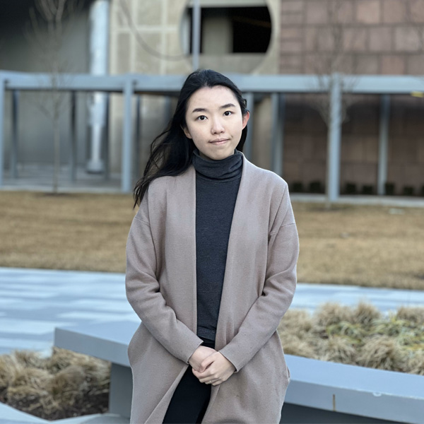

Yan Liang
51 Pegasi b Fellow, Yale University
I am a 51 Pegasi b Fellow at Yale University, where I work with Malena Rice and develop AI methods for scientific discovery in astronomy. I build tools for studying a variety of astrophysical objects—from distant galaxies (SPENDER I, II, DESI outliers) to exoplanets orbiting stars in our solar neighborhood (AESTRA I, II). I received my Ph.D. in Astrophysical Sciences from Princeton University in 2025, advised by Joshua Winn and Peter Melchior, and my B.A. in Physics from UC Berkeley.
My recent work focuses on developing generative AI models to disentangle stellar activity from planetary signals in radial-velocity data, with the goal of uncovering small, Earth-like planets. My long-term vision is to build a foundation model for stellar spectroscopy that learns shared patterns of stellar variability and instrumental effects across many stars and spectrographs.

Publications
-
AESTRA II: Generative Spectral Modeling of the Sun as a Star for Precise Radial Velocities
Revised manuscript under review, October 2026
-
Benchmarking Machine Learning Emulators of Stellar Evolution for Precision Asteroseismology
The Astrophysical Journal 1010, 33 (2026)
-
AESTRA: Deep Learning for Precise Radial Velocity Estimation in the Presence of Stellar Activity
The Astronomical Journal 167, 23 (2024)
-
Outlier Detection in the DESI Bright Galaxy Survey
The Astrophysical Journal Letters 956, L6 (2023)
-
Autoencoding Galaxy Spectra. II. Redshift Invariance and Outlier Detection
The Astronomical Journal 166, 75 (2023)
-
Autoencoding Galaxy Spectra. I. Architecture
The Astronomical Journal 166, 74 (2023)
-
DI Herculis Revisited: Starspots, Gravity Darkening, and 3D Obliquities
The Astrophysical Journal 927, 114 (2022)
-
Kepler-90: Giant Transit-Timing Variations Reveal a Super-Puff
The Astronomical Journal 161, 202 (2021)
-
APOLLO Clock Performance and Normal Point Corrections
Classical and Quantum Gravity 34, 245009 (2017)
Contact
Department of Astronomy
Yale University
New Haven, CT